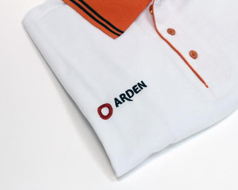
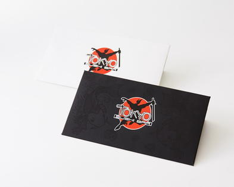
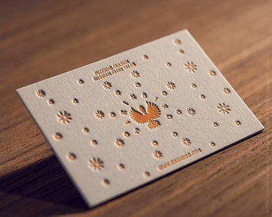
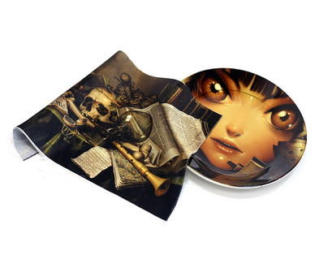
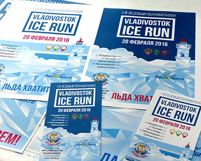

Шелкография – распространённый метод нанесения рисунка на одежду или тканевую поверхность. Шелкографию широко используют для рекламной деятельности, ведь с помощью этой технологии можно улучшить внешний вид товара, сделав приметней для покупателя.
Шелкография обладает рядом преимуществ:
Большое разнообразие цветов и узоров.
Печать можно сделать как на плоской, так и на выпуклой или неровной поверхности.
Нанесенный логотип отличается стойкостью и четкостью.
Рисунок можно нанести на большую площадь.
Такое нанесение логотипов доступно по цене, поэтому выгодно заказывать большие тиражи.
Где заказать нанесение логотипов данным способом?
Шелкография – работа, которую мы выполняем оперативно, учитывая требования заказчика. Наносим печать на футболках, рубашках, бейсболках, сумках и мн. др.. Индивидуальный подход к каждому клиенту – главное правило в нашем коллективе. Печать логотипов осуществляем очень быстро.
«Прототип» оказывает услуги по печати логотипов на тканях и головных уборах.
Технология нанесения шелкографии
Специальную раму в начале работы накрывают сеточкой, а затем прикладывают смесь. После этого на сетку кладут рисунок, а оставшуюся эмульсию очищают. Таким образом создают эскиз. Во время процесса краску вдавливают при помощи движущего приспособления, которое размывает красящую эмульсию.
В случае, если рисунок невозможно нанести посредством шелкографии (сразу на предмете), помочь может специальное устройство – шелкотрансфер. Благодаря этому способу, наносят изображения на разные вещи: футболки, рубашки, сумки, куртки и т.д.
Машинная вышивка

Алексей Первушин,
Машинная (компьютерная) вышивка позволяет перенести серийный рисунок на ткань или готовое текстильное изделие. В специальной программе для вышивальной машины дизайнер задает индивидуальные параметры будущего алгоритма работы. Вышивка фирменных эмблем на заказ производится непосредственно по текстилю или на специальном шевроне, который потом крепится на ткань..
Печать по ткани популярна во Владивостоке, но этот способ переноса изображения подходит не для всех материалов. Зато вышивка на готовых изделиях — красиво и универсально. Наносится очень быстро и аккуратно. Вышивка логотипов на заказ впечатляет уровнем исполнения, поскольку цвета нитей легко подыскать соответственно шкале Pantone, хотя некоторые оттенки бывают неточными. Рисунки становятся органичной частью одежды, и длительное время сохраняют первоначальный внешний вид..
Особенности вышивки на готовой одежде
Нанести декоративные изображения, лого или текст легко на повседневную и спецодежду, униформу, в том числе, спинку куртки, грудь свитера. Возможна вышивка на коже, войлоке, кожзаменителе (на тканевой основе), текстиле, готовых головных уборах, чехлах. Наше оборудование позволяет выполнить детализированные рисунки.
Мы вышиваем рисунки разной сложности по приемлемым ценам. Индивидуальный подход к реализации отдельного заказа обеспечивает высокий уровень исполнения изображений.
Ультрафиолетовая печать

Алексей Первушин,
Тиснение позволяет сделать продукцию более презентабельной, солидной и красивой. Наша типография использует следующие методы обработки:
Блинтовое. С его помощью получается вдавленный гладкий оттиск без дополнительного окрашивания — этот вариант используется на бумаге либо коже. Заказав тиснение во Владивостоке с акцентом именно на этот способ, заказчик получаете замечательную продукцию, которую приятно держать в руках.
С использованием фольги. При выборе этого способа металлизированное напыление фольги переносится на сам продукт. Это замечательное решение, когда необходимо подчеркнуть статус, сделать элитный, люксовый дизайн. Наши клиенты часто выбирают фольгу, при заказе визиток.
Конгревное. При использовании этой технологии продукция пропускается между штампом и контрштампом, благодаря чему получается выпуклое изображение. Подобное тиснение на коже поможет добиться необычного объемного эффекта, визуально сделать изделие гораздо дороже. Шикарно смотрится на ежедневниках, блокнотах и других предметах.
У нас есть необходимое оборудование, расходники и колоссальный опыт работы в этом направлении. Тиснение любой сложности на коже (с фольгой или без), создание эффектных визиток, любые другие задачи, связанные с этой технологией, — мы предлагаем выбирать лучший вариант из возможных!
Высокая печать

Алексей Первушин,
Для продвижения брендов часто выбираются разноплановые печатные технологии и нанесение корпоративной символики тем или иным способом.
Нюансы технологии
Метод высокой печати сегодня крайне популярен. Такое название получил из-за того, что печатные элементы (буквы или же изображения) расположены здесь выше пробельных. Для нанесения логотипов выбирается вязкая краска, которая не стекает на пробелы. При печати на хлопковой бумаге не нужно её дополнительно проклеивать, не требуется устойчивость к влаге, потому что для печати не используется влажный раствор.
При печати визиток и другой полиграфии высоким методом буквы выступают над пробелами, что ведет к образованию рельефа с обеих сторон.
Высокая печать во Владивостоке применяется для создания рекламной полиграфии, книжных иллюстраций, газет и т. д. Процесс печати трудоемкий, однако инновационный подход к используемой веками технологии позволил отладить его до совершенства и сократить до минимума.
Почему стоит обратиться к нам
Мы работаем исключительно с современным оборудованием, которое позволяет добиваться первоклассных результатов.
Рекламная полиграфия во Владивостоке, напечатанная высоким способом, обойдется дешевле, чем печать с применением других технологий. С этого метода началось книгопечатание, а «Прототип» делает всё возможное, чтобы максимально усовершенствовать этот процесс.
Сублимационная печать

Алексей Первушин,
Логотипы и изображения на стеклянных, тканевых, металлических, деревянных, пластиковых, фарфоровых и т.д. изделиях крайне популярны как у компаний, так и у частных лиц. Поэтому стоит ознакомиться со способами нанесения печати.
Сублимация – это действенный и распространенный метод непрямого нанесения полноцветных логотипов, надписей и картинок на сувениры. Перед печатью на керамике и иных материалах на предметы наносится специальное полимерное покрытие. За короткое время создаём качественную сувенирную продукцию, которая поможет продвижению бренда заказчика.
Наша типография выполняет печать больших и малых тиражей, что будет интересно как крупным компания, так и частным лицам. В «Прототипе» заказывают оригинальные кружки, футболки и т.д. с индивидуальным дизайном, а также сувенирную продукцию для мероприятий.
Плюсы сублимационной печати
Если вам необходима печать на фарфоровых, стеклянных, тканевых, металлических изделиях, то сублимационный вид печати в нашей типографии — это удачный выбор. Этот метод нанесения полноцветного изображения отличается стойкостью. Метод термопрессования позволяет краскам проникать глубоко в верхний слой изделия. Но важно беречь изделия от воздействия прямых солнечных лучей.
Мы принимаем заказы в количестве от нескольких штук.
Особенности технологии
При печати на фарфоре или же печати на футболках, и иных предметах и материалах изображение изначально наносится посредством цифровой технологии на специально предназначенную для этого бумагу, а затем закрепляется при помощи термопрессования на кружках, футболках, тарелках и т.д.
Офсетная печать

Алексей Первушин,
Качество, дешевизну и широкие дизайнерские возможности собрал в себе этот вид полиграфии. Такой метод перенесения визуального контента на бумагу или картон используется уже много лет, офсетная печать во Владивостоке позволяет реализовать тиражи средних, больших и очень больших размеров. Метод успешно завоевал свою нишу на рынке и со временем не теряет актуальности.
Почти вся профессиональная полиграфия во Владивостоке выполняется офсетным методом: печатный цилиндр оставляет цветной оттиск на носителе, формируя таким образом изображение высокой корректности. Полиграфическая продукция характеризуется цветовой точностью, на изображении видны все мелкие детали, картинка получается четкой и яркой.
Мы сочетаем традиционные технологии и современные материалы. При печати по технологии офсета, наша типография использует широкую палитру красок: как базовую палитру CMYK, так и дополнительную Pantone. Печать журналов, где требуется фотографическое качество, выполняется таким методом. Преимущество офсета — относительно невысокая цена, именно поэтому печать газет выполняется этим способом. Затраты на изготовление существенно снижаются при больших тиражах, что позволяет офсетному методу уверенно опережать цифровой.
Что выгодно печатать, используя данную технологию?
Печать календарей офсетным методом позволяет добиться фотографической реалистичности. Дополнительные возможности декора обеспечивают УФ-лак, фигурная вырубка, ламинация. Печать ежедневников – отличная корпоративная реклама, которая демонстрирует успешность предприятия и его активность на рынке, с помощью офсета можно реализовать сколь угодно сложный дизайн.
Особенности технологии
При печати на фарфоре или же печати на футболках, и иных предметах и материалах изображение изначально наносится посредством цифровой технологии на специально предназначенную для этого бумагу, а затем закрепляется при помощи термопрессования на кружках, футболках, тарелках и т.д.